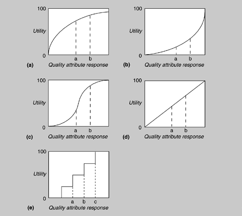

| [ Team LiB ] |
|
12.2 The Basis for the CBAMWe now describe the key ideas that form the basis for the CBAM. The practical realization of these ideas as a series of steps will be described in Section 12.3. Our goal here is to develop the theory underpinning a measure of ROI for various architectural strategies in light of scenarios chosen by the stakeholders. We begin by considering a collection of scenarios generated either as a portion of an ATAM or especially for the CBAM evaluation. We examine how they differ in the values of their projected responses and then assign utility to those values. The utility is based on the importance of each scenario being considered with respect to its anticipated response value. We next consider the architectural strategies that lead to the various projected responses. Each strategy has a cost, and each impacts multiple quality attributes. That is, an architectural strategy could be implemented to achieve some projected response, but while achieving that response it also affects some other quality attributes. The utility of these "side effects" must be taken into account when considering a strategy's overall utility. It is this overall utility that we combine with the project cost of an architectural strategy to calculate a final ROI measure. UTILITYUtility is determined by considering the issues described in the following sections. Variations of ScenariosThe CBAM uses scenarios as a way to concretely express and represent specific quality attributes, just as in the ATAM. Also as in the ATAM, we structure scenarios into three parts: stimulus (an interaction with the system), environment (the system's state at the time), and response (the measurable quality attribute that results). However, there is a difference between the methods: The CBAM actually uses a set of scenarios (generated by varying the values of the responses) rather than individual scenarios as in the ATAM. This leads to the concept of a utility-response curve. Utility-Response CurvesEvery stimulus-response value pair in a scenario provides some utility to the stakeholders, and the utility of different possible values for the response can be compared. For example, a very high availability in response to failure might be valued by the stakeholders only slightly more than moderate availability. But low latency might be valued substantially more than moderate latency. We can portray each relationship between a set of utility measures and a corresponding set of response measures as a graph—a utility-response curve. Some examples of utility-response curves are shown in Figure 12.2. In each, points labeled a, b, or c represent different response values. The utility-response curve thus shows utility as a function of the response value. Figure 12.2. Some sample utility-response curves The utility-response curve depicts how the utility derived from a particular response varies as the response varies. As seen in Figure 12.2, the utility could vary nonlinearly, linearly, or even as a step-function. For example, graph (c) portrays a steep rise in utility over a narrow change in a quality attribute response level, such as the performance example stated above. The availability example might be better characterized by graph (a), where a modest change in the response level results in only a very small change in utility to the user. Eliciting the utility characteristics from the stakeholders can be a long and tedious process. To make it practical we have chosen to elicit only rough approximations of these curves from the stakeholders, using five values of the quality attribute response for the scenario. We now explain the four of these values that can be derived without consideration of any architectural strategy. The fifth value depends on the architectural strategy used, and we discuss this later. To build the utility-response curve, we first determine the quality attribute levels for the best-case and worst-case situations. The best-case quality attribute level is that above which the stakeholders foresee no further utility. For example, a system response to the user of 0.1 second is perceived as instantaneous, so improving it further so that it responds in 0.03 second has no utility. Similarly, the worst-case quality attribute level is a minimum threshold above which a system must perform; otherwise it is of no use to the stakeholders. These levels—best-case and worst-case—are assigned utility values of 100 and 0, respectively. We must then determine the current and desired utility levels for the scenario. The respective utility values (between 0 and 100) for the current and desired cases are elicited from the stakeholders, using the best-case and worst-case values as reference points (e.g., we are currently half as good as we would like to be, but if we reach the desired quality attribute level, we will have 90% of the maximum utility; hence, the current utility level is set to 50 and the desired utility level is set to 90). In this manner the curves are generated for all of the scenarios. Priorities of ScenariosDifferent scenarios within a given system have different levels of importance to the stakeholders and hence different utilities. To characterize the relative importance of each scenario, a weight is assigned through a two-step voting exercise. In the first step the stakeholders vote on the scenarios to establish an ordering among them. This voting is based on each scenario's "expected" response value. The stakeholders then assign a weight of 1 to the highest-rated scenario and a fractional amount to the other scenarios based on their relative importance. If, at some future date, additional scenarios need to be added, they can be assigned a weight. The stakeholders, through consensus, can make sure that the scenarios weights accord with their intuition. Architectural StrategiesIt is the job of the architect, or architects, to determine the architectural strategies for moving from the current quality attribute response level to the desired or even best-case level. A portion of the CBAM is devoted to this task. For each strategy, we can derive
Side effectsEach architectural strategy will impact not only the quality attribute from the scenario being considered currently but will typically also affect other quality attributes (this is why there are architectural tradeoffs!). It is important to determine the utility of these additional side effect attribute responses that arise as a result of applying the architectural strategy. In the worst case, we must create a new version of the scenario for the side effect attribute and determine its utility-response curve. However, in practice, if the quality attribute is important to the stakeholders, then it has occurred in one of the other scenarios and the utility-response curve has already been constructed for that response. In this case, the only thing left to determine is the expected utility associated with that quality attribute for the given architectural strategy. Notice that it is possible that the expected utility for a particular attribute may be negative if the architectural strategy is designed to emphasize an attribute in conflict with the one whose utility we are currently calculating. Once this additional information has been elicited we can calculate the benefit of applying an architectural strategy by summing its benefits to all relevant quality attributes. Determining benefit and normalizationWe calculate the overall utility of an architectural strategy across scenarios from the utility-response curves by summing the utility associated with each one (weighted by the importance of the scenario). For each architectural strategy, i, we calculate a benefit, Bi as follows: where bi,j is the benefit accrued to strategy i due to its effect on scenario j and Wj is the weight of scenario j. Referring to Figure 12.2, each bi,j is calculated as the change in utility brought about by the architectural strategy with respect to this scenario: bi,j = Uexpected – Ucurrent; that is, the utility of the expected value of the architectural strategy minus the utility of the current system relative to this scenario. The effect of multiplying the weight, Wj, is to normalize this utility value by the relative importance of the various scenarios, as already described. CALCULATING ROIThe ROI value for each architectural strategy is the ratio of the total benefit, Bi, to the Cost, Ci, of implementing it. The cost is calculated using a model appropriate for the system and the environment being developed. Using this ROI score, the architectural strategies can be rank-ordered; this rank ordering can then be used to determine the optimal order for implementation of the various strategies. Consider curves (a) and (b) in Figure 12.2. Curve (a) "flattens out" as the quality attribute response improves. In this case, it is likely that a point is reached past which ROI decreases as the quality attribute response improves. In other words, spending more money will not yield a significant increase in utility. On the other hand, consider curve (b), for which a small improvement in quality attribute response can yield a very significant increase in utility. There an architectural strategy whose ROI is too low might rank significantly higher with a modest improvement in its quality attribute response.
|
| [ Team LiB ] |
|